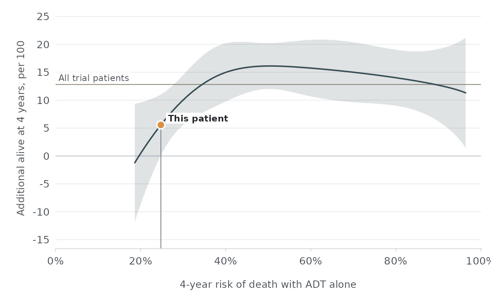

mhspcarpi scores patients with metastatic hormone-sensitive prostate cancer (mHSPC) on a risk model developed from individual participant data of 4 placebo-controlled randomized clinical trials of androgen receptor pathway inhibitors (ARPIs). For each patient it returns:
- the risk of death within 4 years with placebo plus androgen deprivation therapy (ADT), called baseline risk; and
- the pooled treatment effects of an ARPI plus ADT versus placebo plus ADT at that baseline risk, each with a 95% confidence interval and a 95% prediction interval.
Inputs
model_inputs() lists the 9 inputs, the column names
expected in a data frame, the units, and what to enter.
inputs <- model_inputs()
inputs[c("name", "unit", "accepted", "scoring")]
#> name unit accepted
#> 1 ecog_ps <NA> 0, 1, 2
#> 2 gleason_score <NA> 2, 3, 4, 5, 6, 7, 8, 9, 10
#> 3 visceral_metastasis <NA> 0, 1
#> 4 bone_metastases count Count, or category code "0-3", "4-6", "7-10", "11+"
#> 5 psa ng/mL 0 to 100,000
#> 6 hemoglobin g/L 20 to 250
#> 7 albumin g/L 10 to 70
#> 8 alp U/L 0 to 10,000
#> 9 ldh U/L 0 to 10,000
#> scoring
#> 1 0 vs 1 or 2
#> 2 ≤8 vs 9 or 10
#> 3 Absent (0) or present (1)
#> 4 Categories 0–3, 4–6, 7–10, ≥11
#> 5 Restricted cubic spline; trial data 0 to 19,000; values above 8,322 scored at the cap
#> 6 Restricted cubic spline; trial data 57 to 186
#> 7 Restricted cubic spline; trial data 24 to 61.5
#> 8 Restricted cubic spline; trial data 26 to 7,680; values above 4,824 scored at the cap
#> 9 Restricted cubic spline; trial data 67 to 4,124; values above 1,470 scored at the capThe package includes 6 synthetic patients that span the range of baseline risk.
example_patients
#> patient_id ecog_ps gleason_score visceral_metastasis bone_metastases psa
#> 1 P1 0 7 0 0 5
#> 2 P2 0 8 0 2 12
#> 3 P3 0 9 0 8 45
#> 4 P4 1 9 0 15 150
#> 5 P5 1 8 1 5 30
#> 6 P6 2 10 1 30 800
#> hemoglobin albumin alp ldh
#> 1 150 46 70 160
#> 2 142 44 80 170
#> 3 128 41 180 210
#> 4 115 38 420 280
#> 5 120 36 150 320
#> 6 105 34 500 350Baseline risk
predict_baseline_risk() returns one row per patient. The
notes column reports values outside the range observed in
the trials and baseline risks outside the range in which treatment
effects were estimated.
risk <- predict_baseline_risk(example_patients)
risk
#> row linear_predictor baseline_risk in_effect_range
#> 1 1 -0.6579870 0.1963982 TRUE
#> 2 2 -0.3946690 0.2476209 TRUE
#> 3 3 0.8187273 0.6160547 TRUE
#> 4 4 1.6781886 0.8956950 TRUE
#> 5 5 1.5096961 0.8519254 TRUE
#> 6 6 2.2931052 0.9846912 FALSE
#> notes
#> 1 <NA>
#> 2 <NA>
#> 3 <NA>
#> 4 <NA>
#> 5 <NA>
#> 6 Baseline risk is outside the range in which treatment effects were estimated (19% to 96%); effects are shown at the nearest edge of that range.Treatment effects
estimate_treatment_effect() returns the effects at each
patient’s baseline risk in long format. The ard scale is
the difference in the probability of being alive at 4 years,
rmst is the difference in restricted mean survival time
through 4 years in months, and hr is the hazard ratio for
death.
effects <- estimate_treatment_effect(example_patients, scale = c("ard", "rmst"))
effects[c("row", "baseline_risk", "scale", "estimate", "conf_low", "conf_high")]
#> row baseline_risk scale estimate conf_low conf_high
#> 1 1 0.1963982 ard 0.0002832789 -0.0945278628 0.09509442
#> 2 1 0.1963982 rmst 0.6177354572 -1.3767451335 2.61221605
#> 3 2 0.2476209 ard 0.0556955429 0.0009928562 0.11039823
#> 4 2 0.2476209 rmst 0.9992638106 -0.1532595655 2.15178719
#> 5 3 0.6160547 ard 0.1564764237 0.1044090043 0.20854384
#> 6 3 0.6160547 rmst 5.0448803573 3.5714696551 6.51829106
#> 7 4 0.8956950 ard 0.1276327083 0.0643407300 0.19092469
#> 8 4 0.8956950 rmst 3.9459309396 1.4116989980 6.48016288
#> 9 5 0.8519254 ard 0.1339398816 0.0803733946 0.18750637
#> 10 5 0.8519254 rmst 4.3633263343 2.3639661945 6.36268647
#> 11 6 0.9846912 ard 0.1131768664 0.0145535338 0.21180020
#> 12 6 0.9846912 rmst 2.9881088602 -1.0341336556 7.01035138Patients whose baseline risk falls outside the 1st to 99th
percentiles of the trials receive the effect at the nearest edge of that
range, with in_effect_range set to FALSE.
Checking data before scoring
check_inputs() stops with an informative error when a
value is missing or impossible, and returns warnings and notes for
values outside the trial range.
check_inputs(data.frame(example_patients[1, ], hemoglobin = -1))
#> [1] row input severity message
#> <0 rows> (or 0-length row.names)Plotting
plot_treatment_effect() draws the pooled effect across
baseline risk, with the patients in newdata marked.
treatment_effect_curve() returns the plotted curve for
custom figures.
plot_treatment_effect(example_patients[2, ], scale = "ard")
curve <- treatment_effect_curve("rmst")
head(curve)
#> linear_predictor baseline_risk scale estimate conf_low conf_high pred_low
#> 1 -0.7167630 0.1863059 rmst 0.5330103 -1.6883115 2.754332 -4.998805
#> 2 -0.6886720 0.1910711 rmst 0.5735032 -1.5384792 2.685486 -4.693962
#> 3 -0.6605811 0.1959429 rmst 0.6139960 -1.3902587 2.618251 -4.392274
#> 4 -0.6324902 0.2009229 rmst 0.6544889 -1.2439247 2.552902 -4.094262
#> 5 -0.6043992 0.2060126 rmst 0.6949818 -1.0998107 2.489774 -3.800559
#> 6 -0.5763083 0.2112134 rmst 0.7354746 -0.9583243 2.429274 -3.511933
#> pred_high
#> 1 6.064826
#> 2 5.840968
#> 3 5.620266
#> 4 5.403240
#> 5 5.190522
#> 6 4.982883The calculator
run_app() opens the interactive calculator. The same app
is exported as a static Shinylive site with
tools/build_shinylive.R, so it runs entirely in the browser
without a server. The calculator accepts the inputs in its query string,
for example ?psa=45&hemoglobin=128, using the column
names and units listed by model_inputs().
Model specification
The model is stored as aggregate parameters in a JSON file installed with the package. No participant-level data are included.
mhspc_model()
#> mHSPC ARPI treatment-effect model (261002-raw-rcs)
#> • Baseline risk: All-cause death within 4 years with Placebo plus ADT.
#> • Inputs: ecog_ps, gleason_score, visceral_metastasis, bone_metastases, psa,
#> hemoglobin, albumin, alp, and ldh.
#> • Treatment effects of ARPI plus ADT: survival difference, restricted mean
#> survival time difference, and hazard ratio.
#> • Baseline hazards from 100 imputed datasets.The specification is at
system.file("extdata", "model_spec.json", package = "mhspcarpi").